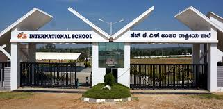

Pannaga Shastri SBachelor of Computer Science Hey guys i am Pannaga shastri ,at present im studing in Governemt Science
college |
However this is where my Education begins,till my 9th standard the name is same but after i move on to 10th
it renamed as
Elite School so i finish my 10th standard on the name as Elite school
it is good experience that we enjoyed alot more than a reading lol and overall our
batch is the most expected batch to do best achivement to the school but finaly i
scored 88.88% on state board.Which was good percentage but you know indian parents will
not satisfy for this score especially i borned in the brahmin family which they exepect
more on me after all they get sad on my score but you know after all they say 'ok good in
next you want to get more marks than this(puc) i give you link about school chceck out.
This is the structure of our school.
There is main reason to a enjoy a lot in the 10th they make sepreate boys and girls section
because of this you know how toxicity will gain in the class.
However finally we became worst batch to the school because we are doing lots of night class bunk and also You
know guys love story,khahani,prem kata etc this all the way everyone enjoy thier school days .
When i was studing in the 10th that time there is an crazy movement that without writing board students are
joining to the pu colleges by writing their entry exam on this behave movement i writted exam in HkS(deeksha at that time 2018-19 )
i got very good marks and same i selected, on these way everyone got selected by some of the colleges
So lets move on to the next journey ;].

People say after 10th, Puc is the main turning point on the life i don't know about this it is true or false
but ok! On that mind set i taken Science because of high scope we all think on this way but more that we want some
respect that i am science student rather then we will not think that is i am capable or not .
But i take science as pmcs(computer_science) because iam more intrested in cs so basicaly i loved to code.
i spend 1 year in HKS pre University college i cant stay another one year because i did not learn anything in 1st year so i think the time came
as came to leave this college because that much i enjoyed and my parents are paying arounf 60k-70k as fees to the college with that 20k for bus fees
totaly 1lac per annum want to pay and also we are middle class family on the basis of financial problem but it is good college but you know guys problem of middle class family so i quit this college to move on.
To know more about college i shared the link.
